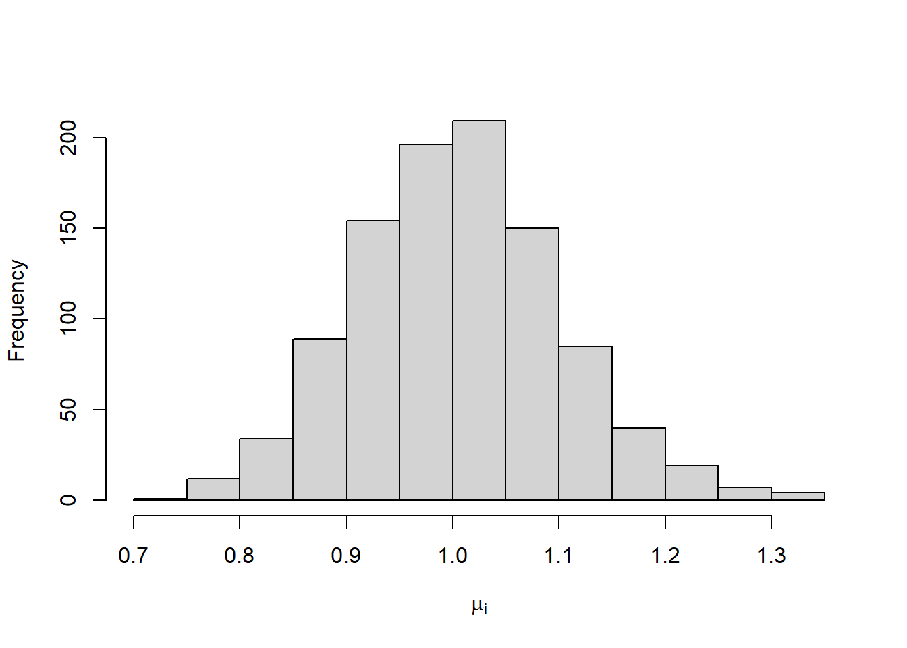
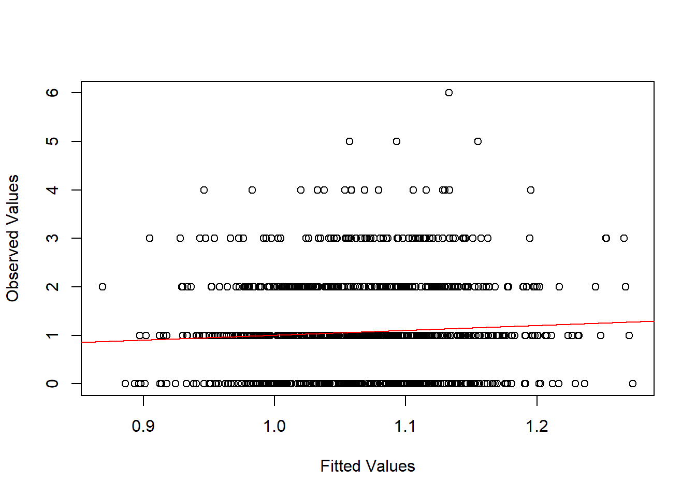
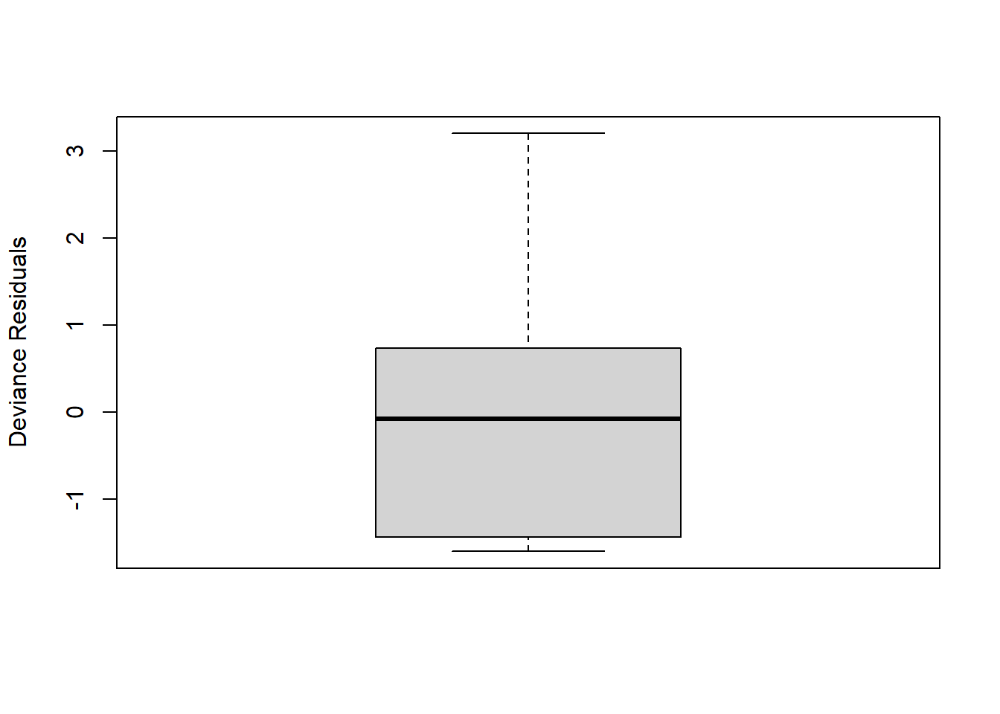
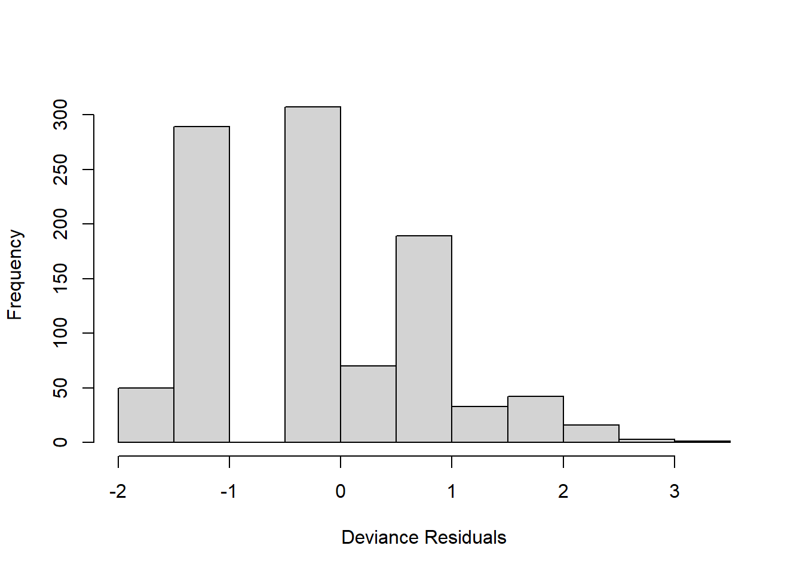
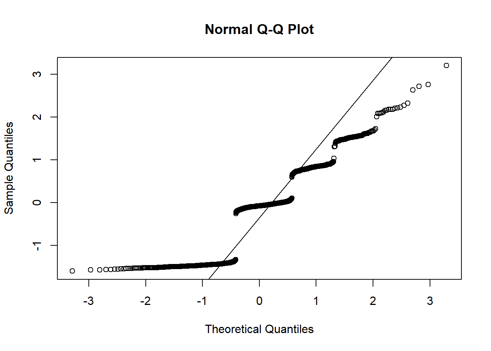
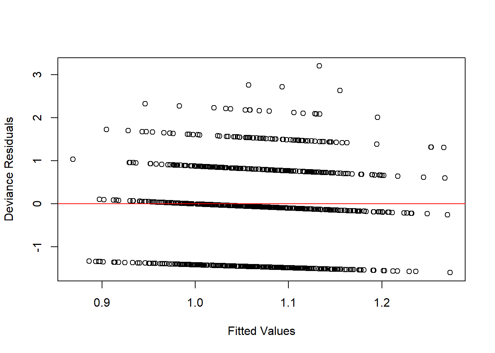
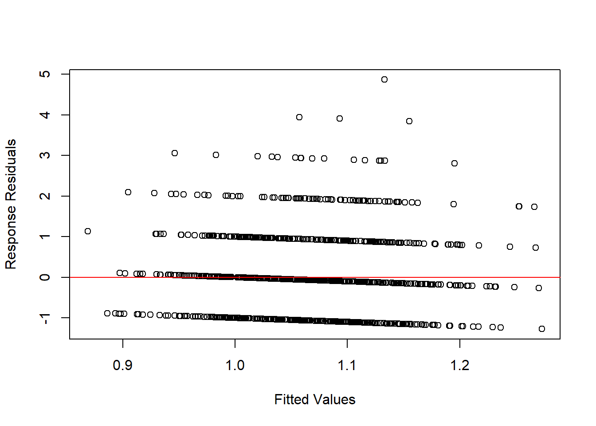
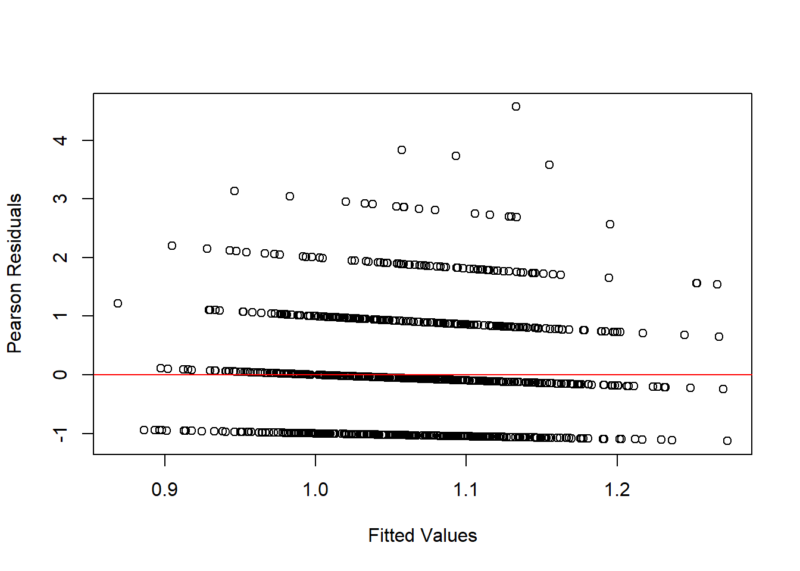
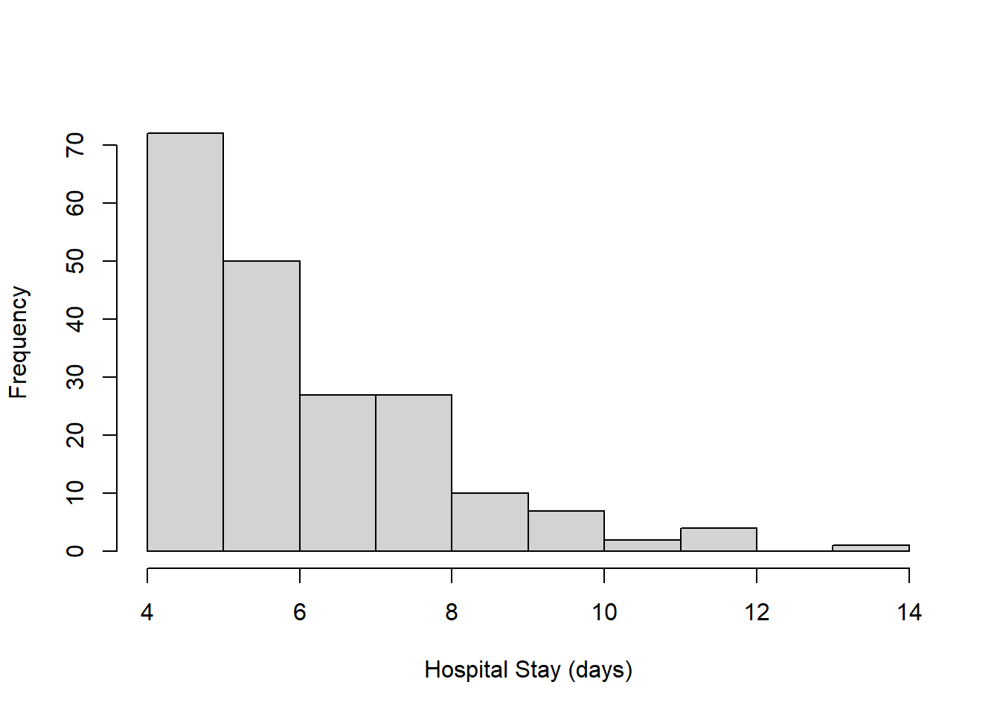

# Load packages
library(readxl)
# Set seed
set.seed(9)98 Poisson Regression (Solutions)
98.1 Problem 1
The purpose of this problem is to demonstrate just how difficult it is to check our assumptions for Poisson regression.
98.1.1 Part (a)
Create the following variables:
n: This will be the sample size. Make this at least 100.beta_0: This will be the intercept. You can make this any real number.beta_1: This will be the slope. You can make this any real number other than zero.
n <- 1e3
beta_0 <- 0
beta_1 <- 0.198.1.2 Part (b)
Generate n iid standard normal random variables. Store them as x.
x <- rnorm(n)98.1.3 Part (c)
For this problem, we will assume the following:
- \(\log \mu_i = \beta_0 + \beta_1 X_i\)
- The observations are iid.
- \(Y_i |X_i \sim \text{Poisson}(\mu_i)\)
To make our lives easier, we’re not going to worry about offsets right now. We’re going to assume that \(t_1 = t_2 = \cdots = t_{n-1} = t_n = 1\).
Create a vector mu that contains \(\mu_1,\mu_2,\dotsc,\mu_n\). Then, use summary(mu) to get some descriptive statistics on the means. Create a histogram of \(\mu_1,\mu_2,\dotsc,\mu_n\) as well.
mu <- exp(beta_0 + beta_1 * x)
summary(mu) Min. 1st Qu. Median Mean 3rd Qu. Max.
0.7378 0.9372 1.0031 1.0052 1.0685 1.3182 hist(x = mu,
xlab = expression(mu[i]),
main = "")
98.1.4 Part (d)
Generate \(Y_1,\dotsc,Y_n\) according to the assumptions above.
y <- rpois(n = n,
lambda = mu)98.1.5 Part (e)
Perform Poisson regression and quasi-Poisson regression with \(Y_i\) as the outcome and \(X_i\) as the single explanatory variable.
# Poisson regression
mod_01 <- glm(formula = y ~ x,
family = poisson)
summary(mod_01)
Call:
glm(formula = y ~ x, family = poisson)
Coefficients:
Estimate Std. Error z value Pr(>|z|)
(Intercept) 0.05966 0.03073 1.941 0.0522 .
x 0.06582 0.03200 2.057 0.0397 *
---
Signif. codes: 0 '***' 0.001 '**' 0.01 '*' 0.05 '.' 0.1 ' ' 1
(Dispersion parameter for poisson family taken to be 1)
Null deviance: 1129.8 on 999 degrees of freedom
Residual deviance: 1125.6 on 998 degrees of freedom
AIC: 2667.9
Number of Fisher Scoring iterations: 5# Quasi-Poisson Regression
mod_02 <- glm(formula = y ~ x,
family = quasipoisson)
summary(mod_02)
Call:
glm(formula = y ~ x, family = quasipoisson)
Coefficients:
Estimate Std. Error t value Pr(>|t|)
(Intercept) 0.05966 0.03028 1.970 0.0491 *
x 0.06582 0.03153 2.088 0.0371 *
---
Signif. codes: 0 '***' 0.001 '**' 0.01 '*' 0.05 '.' 0.1 ' ' 1
(Dispersion parameter for quasipoisson family taken to be 0.9712016)
Null deviance: 1129.8 on 999 degrees of freedom
Residual deviance: 1125.6 on 998 degrees of freedom
AIC: NA
Number of Fisher Scoring iterations: 5Is there evidence of overdispersion?
No. The dispersion parameter is essentially 1.
98.1.6 Part (f)
Using the Poisson regression model, make the following plots:
- A calibration-style plot with fitted values on the horizontal axis, observed values on the vertical axis, and a reference line with intercept 0 and slope 1.
- Histogram, boxplot, and q-q plot of the deviance residuals.
- Scatterplot with the fitted values on the horizontal axis, deviance residuals on the vertical axis, and a horizontal line at zero.
- Scatterplot with the fitted values on the horizontal axis, response residuals on the vertical axis, and a horizontal line at zero.
- Scatterplot with the fitted values on the horizontal axis, Pearson residuals on the vertical axis, and a horizontal line at zero.
# Calibration-style plot
plot(x = mod_01$fitted.values,
y = y,
xlab = "Fitted Values",
ylab = "Observed Values")
abline(a = 0,
b = 1,
col = "red")
# Deviance residuals
resid_dev <- residuals(object = mod_01,
type = "deviance")
boxplot(x = resid_dev,
ylab = "Deviance Residuals")
hist(x = resid_dev,
xlab = "Deviance Residuals",
main = "")
qqnorm(resid_dev)
qqline(resid_dev)
plot(x = mod_01$fitted.values,
y = resid_dev,
xlab = "Fitted Values",
ylab = "Deviance Residuals")
abline(h = 0,
col = "red")
# Response residuals
resid_response <- residuals(object = mod_01,
type = "response")
plot(x = mod_01$fitted.values,
y = resid_response,
xlab = "Fitted Values",
ylab = "Response Residuals")
abline(h = 0,
col = "red")
# Response residuals
resid_pearson <- residuals(object = mod_01,
type = "pearson")
plot(x = mod_01$fitted.values,
y = resid_pearson,
xlab = "Fitted Values",
ylab = "Pearson Residuals")
abline(h = 0,
col = "red")
98.1.7 Part (g)
Modify beta_0 and/or beta_1 in Part (a) so that \(\mu_1,\dotsc,\mu_n\) are all at least 100. (You can check Part (c).) Then re-run all your code. What do the plots in Part (f) look like?
Then, modify beta_0 and/or beta_1 in Part (a) so that \(\mu_1,\dotsc,\mu_n\) are all below 2. (You can check Part (c).) Then re-run all your code. What do the plots in Part (f) look like?
When the means are large, the plots in Part (f) look how we want them to. The points in the calibration-style plot fall along the reference line; the deviance residuals are normally distributed; and in the scatterplots, the reference line goes straight through the center of the cloud of points.
When the means are small, the plots are weird. All of the scatterplots have striations or banding, which is a result of the restricted range of the outcome. Consider the response residuals: If \(Y_i\) has to be a counting number then plotting \(Y_i - \hat{Y}_i\) as a function of \(\hat{Y}_i\) will result in a bunch of lines that intersect the vertical axis at \(Y_i\) and have a slope of \(-1\).
Keep in mind that no matter what \(\beta_0\) and \(\beta_1\) are, we’re not violating any of the assumptions of Poisson regression. This is why assumption-checking is so hard for this analysis; even when the assumptions are met, we get weird plots.
98.2 Problem 2
For this problem, you will analyze the data set from Obesity Is Independently Associated with Spinal Anesthesia Outcomes: A Prospective Observational Study. You’ll have to download the data set and put it in your working directory. The authors of this paper performed logistic regression with “successful anesthesia” as the outcome. We will be examining the variable HospitalStay instead. Although there’s no data dictionary, we’re going to assume this variable represents the duration of the hospital stay in days.
# Load data
d <- read_xls("pone.0124264.s001.xls")98.2.1 Part (a)
Knowing what you know about Poisson regression, does it make sense to use Poisson regression for this outcome? Why or why not?
I don’t think it makes sense to use Poisson regression for this outcome. Although the outcome is a count, it’s not a count of the number of events, where the events are occurring at a constant rate.
98.2.2 Part (b)
Use Poisson regression to regress HospitalStay on at least two explanatory variables of your own choosing.
Do not supply an offset. There’s not really a \(t_i\) here, so we’re sort of assuming \(t_i = 1\) for everyone. This means that we’re modeling the mean of the distribution, and not really a rate.
Use summary to print the results to screen.
# What are the ages in the data set?
summary(d$Age) Min. 1st Qu. Median Mean 3rd Qu. Max.
49.0 65.0 72.0 70.3 76.0 85.0 # Create shifted age variable
d$Age_70 <- d$Age - 70
# Poisson regression
mod_03 <- glm(formula = HospitalStay ~ Age_70 + SuccessAnesthesia,
data = d,
family = poisson)
summary(mod_03)
Call:
glm(formula = HospitalStay ~ Age_70 + SuccessAnesthesia, family = poisson,
data = d)
Coefficients:
Estimate Std. Error z value Pr(>|z|)
(Intercept) 1.953760 0.056939 34.313 <2e-16 ***
Age_70 -0.001178 0.003559 -0.331 0.7406
SuccessAnesthesia -0.118390 0.065372 -1.811 0.0701 .
---
Signif. codes: 0 '***' 0.001 '**' 0.01 '*' 0.05 '.' 0.1 ' ' 1
(Dispersion parameter for poisson family taken to be 1)
Null deviance: 100.580 on 199 degrees of freedom
Residual deviance: 97.328 on 197 degrees of freedom
(9 observations deleted due to missingness)
AIC: 841.4
Number of Fisher Scoring iterations: 498.2.3 Part (c)
Repeat Part (b) but use quasi-Poisson regression instead. Does there appear to be over-dispersion?
mod_04 <- glm(formula = HospitalStay ~ Age_70 + SuccessAnesthesia,
data = d,
family = quasipoisson)
summary(mod_04)
Call:
glm(formula = HospitalStay ~ Age_70 + SuccessAnesthesia, family = quasipoisson,
data = d)
Coefficients:
Estimate Std. Error t value Pr(>|t|)
(Intercept) 1.953760 0.041202 47.419 <2e-16 ***
Age_70 -0.001178 0.002575 -0.458 0.6478
SuccessAnesthesia -0.118390 0.047304 -2.503 0.0131 *
---
Signif. codes: 0 '***' 0.001 '**' 0.01 '*' 0.05 '.' 0.1 ' ' 1
(Dispersion parameter for quasipoisson family taken to be 0.5236265)
Null deviance: 100.580 on 199 degrees of freedom
Residual deviance: 97.328 on 197 degrees of freedom
(9 observations deleted due to missingness)
AIC: NA
Number of Fisher Scoring iterations: 4No, there appears to be underdispersion. The variance is about half of the mean.
98.2.4 Part (d)
Interpret the intercept and at least one non-intercept coefficient in real-world terms.
exp(mod_03$coefficients) (Intercept) Age_70 SuccessAnesthesia
7.0551623 0.9988225 0.8883495 - We would expect a patient who is 70 years old and had unsuccessful anesthesia to have a hospital stay of 7 days.
- With each additional year of age, the expected hospital stay decreases by \((1 - 0.9988225)\times 100 = 0.12\) percent, holding anesthesia success status constant.
- Successful anesthesia is associated with a \((1 - 0.8883495) \times 100 = 11.2\) percent decrease in expected hospital stay, holding age constant.
98.2.5 Part (e)
Use hist and summary on the outcome variable, HospitalStay. What do you notice?
hist(x = d$HospitalStay,
xlab = "Hospital Stay (days)",
main = "")
summary(d$HospitalStay) Min. 1st Qu. Median Mean 3rd Qu. Max. NAs
4.00 5.00 6.00 6.44 8.00 14.00 9 The minimum hospital stay is 4 days. This doesn’t match the support of the Poisson, which includes 0, 1, 2, and 3. It appears that this procedure always requires a hospital stay of at least four days. It’s almost like the first four days are non-random, and only the excess beyond those four days is random.
98.2.6 Part (f)
Repeat Parts (b) and (c), but change the outcome to a transformation of HospitalStay that makes sense based on what you saw in Part (e). Use the same explanatory variables.
# Create shifted outcome variable
d$HospitalStay_4 <- d$HospitalStay - 4
# Poisson regression
mod_05 <- glm(formula = HospitalStay_4 ~ Age_70 + SuccessAnesthesia,
data = d,
family = poisson)
summary(mod_05)
Call:
glm(formula = HospitalStay_4 ~ Age_70 + SuccessAnesthesia, family = poisson,
data = d)
Coefficients:
Estimate Std. Error z value Pr(>|z|)
(Intercept) 1.117087 0.086584 12.902 < 2e-16 ***
Age_70 -0.003097 0.005757 -0.538 0.59064
SuccessAnesthesia -0.298576 0.101752 -2.934 0.00334 **
---
Signif. codes: 0 '***' 0.001 '**' 0.01 '*' 0.05 '.' 0.1 ' ' 1
(Dispersion parameter for poisson family taken to be 1)
Null deviance: 290.53 on 199 degrees of freedom
Residual deviance: 282.21 on 197 degrees of freedom
(9 observations deleted due to missingness)
AIC: 777.78
Number of Fisher Scoring iterations: 5# Quasi-Poisson regression
mod_06 <- glm(formula = HospitalStay_4 ~ Age_70 + SuccessAnesthesia,
data = d,
family = quasipoisson)
summary(mod_06)
Call:
glm(formula = HospitalStay_4 ~ Age_70 + SuccessAnesthesia, family = quasipoisson,
data = d)
Coefficients:
Estimate Std. Error t value Pr(>|t|)
(Intercept) 1.117087 0.101673 10.987 <2e-16 ***
Age_70 -0.003097 0.006760 -0.458 0.6474
SuccessAnesthesia -0.298576 0.119485 -2.499 0.0133 *
---
Signif. codes: 0 '***' 0.001 '**' 0.01 '*' 0.05 '.' 0.1 ' ' 1
(Dispersion parameter for quasipoisson family taken to be 1.378916)
Null deviance: 290.53 on 199 degrees of freedom
Residual deviance: 282.21 on 197 degrees of freedom
(9 observations deleted due to missingness)
AIC: NA
Number of Fisher Scoring iterations: 5Now we see a little bit of overdispersion.
98.2.7 Part (g)
How does the transformation you made in Part (f) affect the interpretation of the coefficients?
The exponentiated coefficients represent ratios, but not of the mean number days spent in the hospital. Instead, they represent ratios of the mean number of days above four spent in the hospital. If we wanted to interpret them, we’d have to talk about percentage changes, but of the number of days above four. It would be a nightmare.
98.2.8 Part (h)
Repeat Part (f) but use family = poisson(link = "identity") and family = quasipoisson(link = "identity").
# Poisson regression
mod_07 <- glm(formula = HospitalStay_4 ~ Age_70 + SuccessAnesthesia,
data = d,
family = poisson(link = "identity"))
summary(mod_07)
Call:
glm(formula = HospitalStay_4 ~ Age_70 + SuccessAnesthesia, family = poisson(link = "identity"),
data = d)
Coefficients:
Estimate Std. Error z value Pr(>|z|)
(Intercept) 3.051400 0.263623 11.575 < 2e-16 ***
Age_70 -0.006964 0.014123 -0.493 0.62196
SuccessAnesthesia -0.782909 0.289914 -2.700 0.00692 **
---
Signif. codes: 0 '***' 0.001 '**' 0.01 '*' 0.05 '.' 0.1 ' ' 1
(Dispersion parameter for poisson family taken to be 1)
Null deviance: 290.53 on 199 degrees of freedom
Residual deviance: 282.27 on 197 degrees of freedom
(9 observations deleted due to missingness)
AIC: 777.84
Number of Fisher Scoring iterations: 5# Quasi-Poisson regression
mod_08 <- glm(formula = HospitalStay_4 ~ Age_70 + SuccessAnesthesia,
data = d,
family = quasipoisson(link = "identity"))
summary(mod_08)
Call:
glm(formula = HospitalStay_4 ~ Age_70 + SuccessAnesthesia, family = quasipoisson(link = "identity"),
data = d)
Coefficients:
Estimate Std. Error t value Pr(>|t|)
(Intercept) 3.051400 0.309643 9.855 <2e-16 ***
Age_70 -0.006964 0.016588 -0.420 0.6751
SuccessAnesthesia -0.782909 0.340524 -2.299 0.0225 *
---
Signif. codes: 0 '***' 0.001 '**' 0.01 '*' 0.05 '.' 0.1 ' ' 1
(Dispersion parameter for quasipoisson family taken to be 1.379605)
Null deviance: 290.53 on 199 degrees of freedom
Residual deviance: 282.27 on 197 degrees of freedom
(9 observations deleted due to missingness)
AIC: NA
Number of Fisher Scoring iterations: 5The estimate of the dispersion parameter is about the same as in Part (f).
98.2.9 Part (i)
Interpret the intercept and at least one non-intercept coefficient from Part (h) in real-world terms.
mod_07$coefficients (Intercept) Age_70 SuccessAnesthesia
3.051399922 -0.006963597 -0.782908646 With the identity link, the interpretations are the same as for linear regression.
- We would expect a patient who is 70 years old and had unsuccessful anesthesia to have a hospital stay of 7 days (remember we have to add 4 back to the intercept to get the number of days, not the number of excess days).
- With each additional year of age, the expected hospital stay decreases by 0.007 days, holding anesthesia success status constant.
- Holding age constant, patients with successful anesthesia spend 0.78 day less in the hospital than patients wtih unsuccessful anesthesia, on average.
98.3 Problem 3
Suppose you visit \(n\) emergency rooms to observe how busy they are. Define the following:
- \(t_i\) is the number of hours you spend observing the \(i\)th hospital.
- \(Y_i\) is the number of patients you see enter the emergency room at the \(i\)th hospital.
- \(T_i\) is the temperature outside in degrees Fahrenheit.
- \(W_i = 1\) if you observe on a work day (Monday through Friday) and \(W_i = 0\) if you observe on a weekend (Saturday or Sunday).
You assume the following:
- \(\log E(Y_i|T_i,W_i) = \beta_0 + \beta_1 T_i + \beta_2 W_i + \beta_3 T_i W_i + \log t_i\).
- The observations are iid.
- \(Y_i|T_i,W_i\sim\text{Poisson}(\mu_i)\).
98.3.1 Part (a)
Interpret \(\exp(\beta_0)\) in real-world terms.
The expected number of new patients per hour when it’s zero degrees Fahrenheit outside and a weekend.
98.3.2 Part (b)
Interpret \(\exp(\beta_1)\) in real-world terms.
Each one-degree Fahrenheit increase in temperature is associated with a \((\exp(\beta_1) - 1)\times 100\)% increase in the number of new patients per hour, assuming it’s a weekend.
98.3.3 Part (c)
Interpret \(\exp(\beta_2)\) in real-world terms.
If it’s zero degrees Fahrenheit outside, the rate of new patients per hour on work days is \(\exp(\beta_2)\) times the rate of new patients per hour on the weekend.
98.3.4 Part (d)
Interpret \(\exp(\beta_1 + \beta_3)\) in real-world terms.
Each one-degree Fahrenheit increase in temperature is associated with a \((\exp(\beta_1 + \beta_3) - 1)\times 100\)% increase in the number of new patients per hour, assuming it’s a workday.
98.3.5 Part (e)
Interpret \(\exp(\beta_2 + \beta_3)\) in real-world terms.
If it’s one degree Fahrenheit outside, the rate of new patients per hour on work days is \(\exp(\beta_2 + \beta_3)\) times the rate of new patients per hour on the weekend.